Пожар
Вечером 15 апреля случился большой пожар. Наш дом сгорел, как и дом наших соседей, Вани и Илоны. По словам очевидцев, огонь перемещался с огромной скоростью и всё произошло в считанные минуты.
С одной стороны, тяжело про это всё писать. Но всё же у нас дом был не до конца готов, а вот соседей жалко. Они уже вторую зиму зимовали в своём доме, у них уже было хозяйство: куры и козы. Да и посадок сколько у них было, столько души вложено... Слава Богу, и сами живы, и животину спасли.
На приведённых ниже фото можно посмотреть на то, что осталось и от нашего, и от соседского хозяйства.
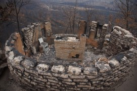
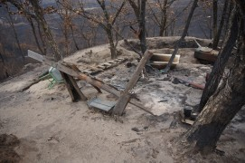
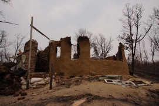
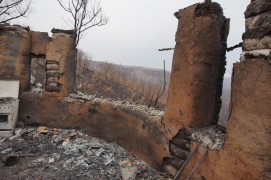
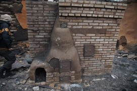
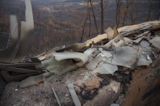
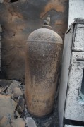
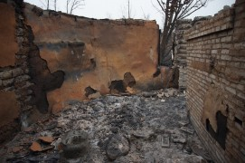
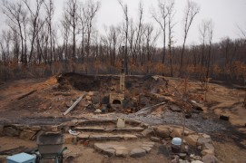
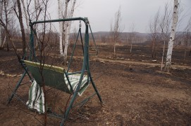
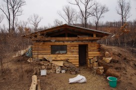
Предыдущая статья
«Купольный дом своими руками и минимальными средствами!»
Следующая статья
«Новые возможности и большой сюрприз!»
Комментарии
Наташа
Мои соболезнования. Какая помощь нужна? Я так понимаю, что у Вани с Илоной совсем дом сгорел, а у вас стены остались? Может им одежда нужна, посуда, еда?
Я как только увидела в новостях про пожар в вашем районе, сразу начала о вас волноваться, но уговаривала себя, что раз не пишешь ничего на своем сайте, значит мимо прошел пожар.
Ирина
Павел, страшное потрясение в очередном письме рассылки с вашего сайта.. очень сочувствую вам!! сердце кровью обливается глядя на эти снимки.. столько было вложено любви в этот ДОМ, что просто невозможно поверить глазам.. когда я читала ваши статьи о троительстве, они так меня тронули, что всегда вспоминая о вас и вашем упорстве и вере на душе становилось тепло и хотелось улыбаться и жить и творить. единственное, что (как бы это цинично не звучало) радует в случившемся, что произошло это п о с л е зимы, а не д о и впереди лето.
надеюсь вам хватит сил пережить этот удар.
Ирина
добавьте, пожалуйста, возможность перевода в долл. а не только в рос.рублях (если возможно)
Свобода Изнутри
Спасибо вам всем за поддержку и участие. У нас всё нормально. Ничего не требуется, в т.ч. деньги :)
В близжайшее время обязательно поделюсь нашими мыслями и планами. Они уже есть :)
Валентина
Сожалею о случившемся. Душой с вами. Веры, надежды, любви!
Валентина
Очень грустно. Веры, надежды, любви!!!
god
Павел, сегодня в 16:08 по Москве на яндекскошелек отправил Вам свои сочувствия. Уверен, что ничего страшного не случилось. Жалко, что физически не смогу помочь Вам в восстановлении дома, ехать уж больно далеко и долго(. Спасибо за ЭТОТ сайт. В Южной Корее люди с древности полагают, что дом построенный на пепелище другого дома не сгорит никогда и в нем всегда будет пребывать благополучие. Теперь Вы просто обречены на это.
Татьяна Николаевна
Павел, нам с мужем очень жаль... Ведь мы давно с вами... вместе строили этот дом. Вместе смеялись, вместе печалились. А что это было онлайн, - значения не имеет.
Радует одно - Ваш оптимизм. Он как-то чувствуется на расстоянии. Как будто рука Невидимого Художника заштриховала что-то, и совсем скоро будут наброски чего-то лучшего! Более красивого! Картины более зрелого, мудрого и Вечного... Векового! Дай-то Бог!
Евгений Канивец
Буквально дней десять назад "случайно" попал на ваш сайт и с увлечением несколько дней читал историю вашего дома. Ваша целеустремлённость и жизнерадостность не давали мне покоя. До сих пор не особо впечатляла технология строительства из мешков (больше склоняюсь в сторону монолитного тяжёлого самана), но "познакомившись" с вами и вашим домом сразу захотелось построить хоть что-то из мешков, хоть сараюшечку! ... и вот только я о вас узнал, как случилась такая незадача :(
Ребята, дай Бог вам сил перенестись через этот отрезок времени и с новыми силами восстановить ваше Пространство любви.
Turner
Ребята, моё сочувствие. Попробую поторопиться теперь. Как же так-то, а?..